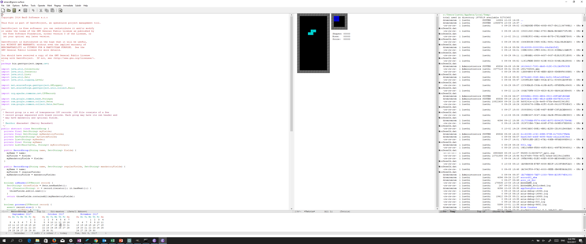

Software Aging
Marcel Lüthi
Departement Mathematik und Informatik
Wenn unsere Software alt wird waren wir erfolgreich!

Beispiel einer erfolgreichen Software:
- Emacs - The Extensible, Customizable,
Self-Documenting Display Editor
Welche Probleme treten auf, wenn bei Wartung mit dem Design inkonsistente Änderungen gemacht werden?
Drei Strategien um dem Problem der Alterung entgegenzuwirken?
Was sind die Konsequenzen von fehlender Dokumentation?
Warum soll die Software trotzdem zur Entwicklungszeit dokumentiert werden
Was ist information hiding?
Können wir verhindern, dass Software unwartbar wird?
Ist die Situation heute besser oder schlechter als vor 20 Jahren?